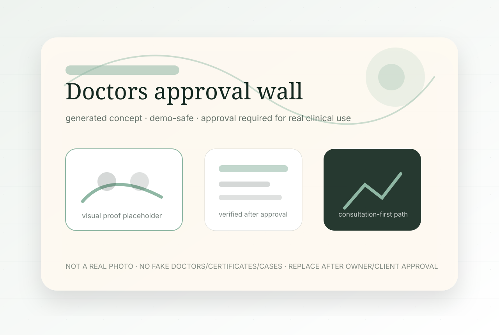
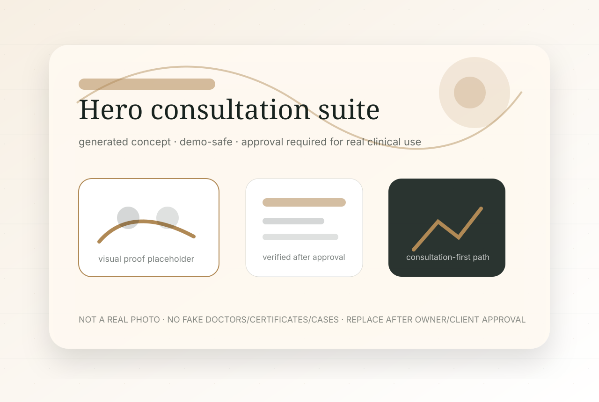
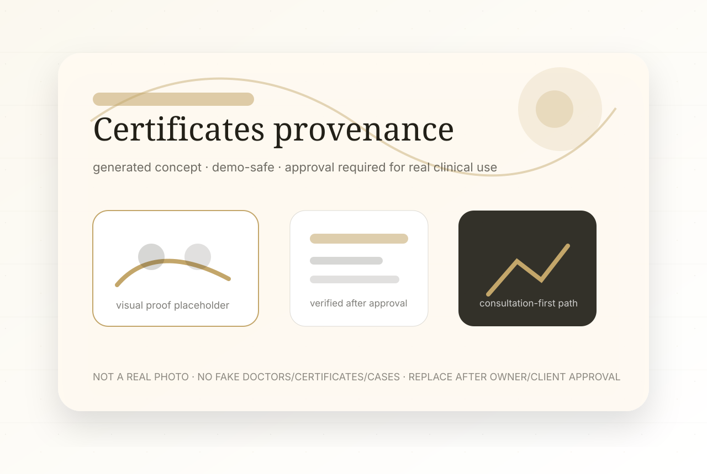
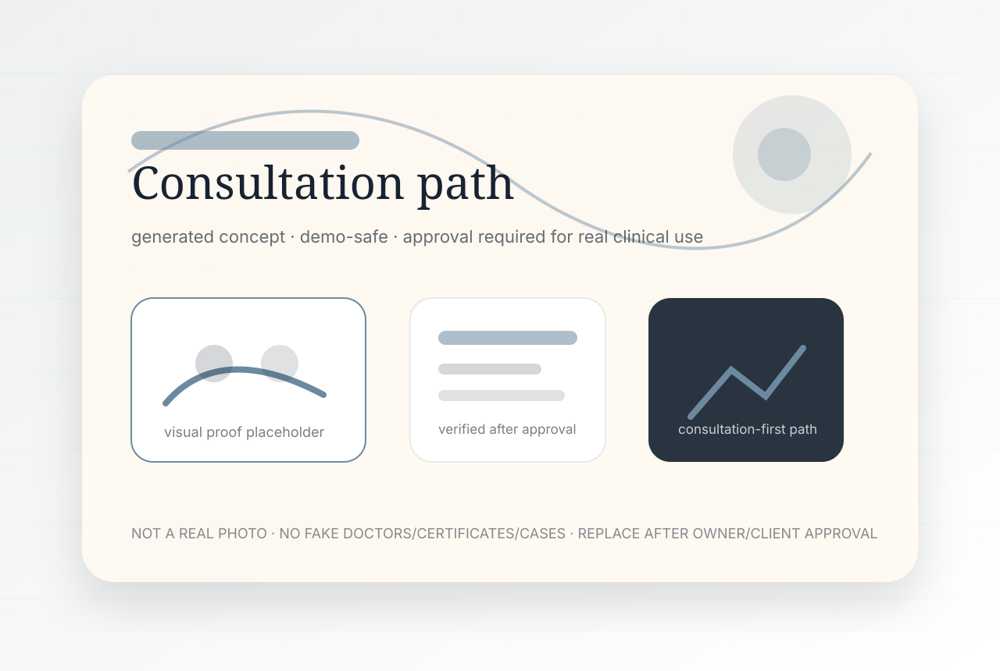
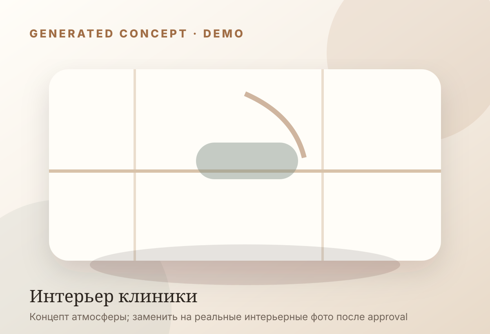

Команда клиники
Публикуются реальные портреты, специализация и регалии после проверки клиникой. В demo используются только маркированные концепт-визуалы.
- реальные фото: approval required
- generated demo: allowed
Премиальный сайт для клиники, где пациент видит не обещания, а понятный путь: первичная консультация, диагностика, план лечения и подтверждённые документы.
Медицински корректно: сроки, методика и прогноз определяются врачом только после очной диагностики.


Публикуются реальные портреты, специализация и регалии после проверки клиникой. В demo используются только маркированные концепт-визуалы.

Сертификаты, лицензии и документы не имитируются. До получения реальных файлов блок работает как структура доверия с честной маркировкой.
До согласования реальных кейсов сайт не использует фото пациентов, before/after и обещания результата. Вместо этого — сценарии консультации, вопросы к врачу и безопасные пояснения.

Запрос пациента → диагностика → варианты плана → ограничения → решение врача → сопровождение. Публикация реальных материалов только с правами и согласием.

Пациент описывает ситуацию и получает понятный следующий шаг: консультация или диагностика.
Врач объясняет применимость методов, ограничения и возможную последовательность лечения.
Сайт аккуратно подводит к плану, но не обещает сроки, цену или результат до осмотра.

Интерьерный блок планируется под реальные фото: ресепшен, кабинет, стерилизация, зона ожидания. В demo — concept visual.
Telegram CTA используется как безопасный контактный маршрут. Интеграции с CRM/формами подключаются только после approval.
Нет медицинских гарантий, fake reviews, fake doctors или неподтверждённых документов.